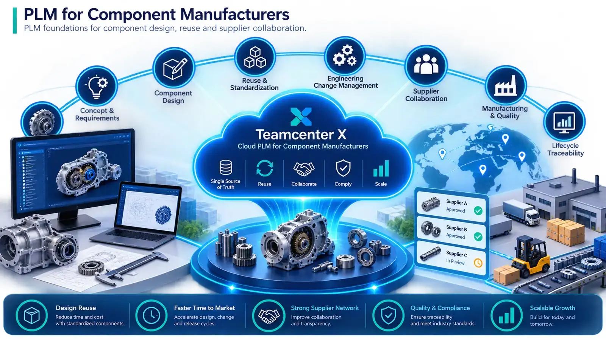
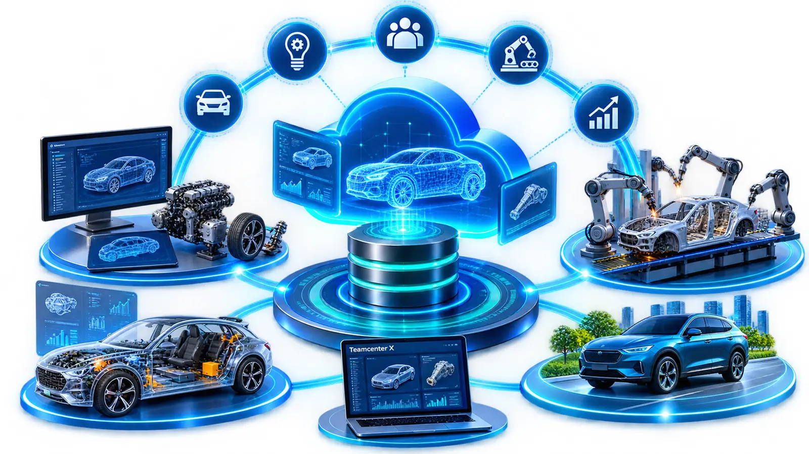
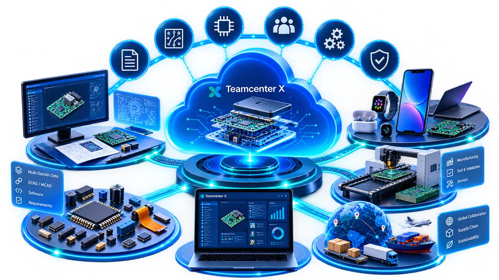

01
部品メーカー向けPLM
部品設計、
- 関連する
課題


インフォグラフィックを拡大業界別PLM
イノベーションと
各カードは、製造業の業種ごとの参考資料です。当サイト内の関連製品、ソリューション、課題とあわせてご紹介しています。お客様の導入実績を示すものではありません。
01
部品設計、

インフォグラフィックを拡大02
製品データ管理（PDM）から、連携したPLMの実践へ移行します。
 インフォグラフィックを拡大
インフォグラフィックを拡大
03
規制が厳しく複雑な航空宇宙・防衛プログラムのためのクラウドPLMワークフロー。
 インフォグラフィックを拡大
インフォグラフィックを拡大
04
先進的な
 インフォグラフィックを拡大
インフォグラフィックを拡大
05
自動車開発、コラボレーション、立ち上げサイクルの短縮のためのクラウドPLM。

インフォグラフィックを拡大06
連携した
 インフォグラフィックを拡大
インフォグラフィックを拡大
07
バッテリー製造装置メーカーと生産エコシステムのためのPLMの実践。
 インフォグラフィックを拡大
インフォグラフィックを拡大
08
設計から
 インフォグラフィックを拡大
インフォグラフィックを拡大
09
エレクトロニクスのライフサイクルと、領域をまたぐ製品データを支援します。

インフォグラフィックを拡大10
船舶・海洋製品の
 インフォグラフィックを拡大
インフォグラフィックを拡大
11
Teamcenter XによるクラウドベースのSaaS型PLMのビジネス価値をご理解いただけます。
 インフォグラフィックを拡大
インフォグラフィックを拡大
お問い合わせを